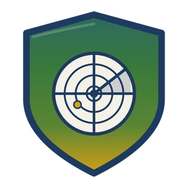
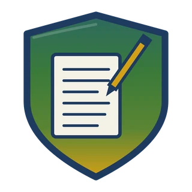
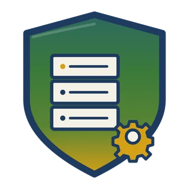
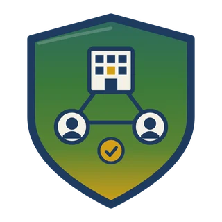
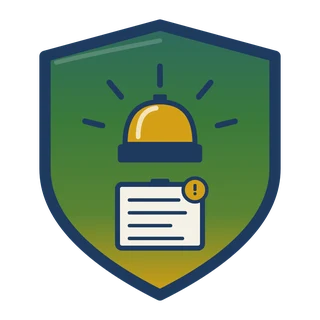

Cyber risk, managed.
Independent cybersecurity and GRC for small and midsize organizations. We learn how you operate, rank what matters, fix it alongside your team, and keep the program current as technology, vendors, and threats change.
- Independent
- No MSP resale
- No quotas
Risk Register
Every organization uses technology differently. Bluegrass Cybersecurity Solutions starts by understanding yours.
Instead of recommending a product on day one, we start with risk, not technology.
What we learn first
- How your business actually operates
- How technology and AI are being used
- What information is involved
- Which obligations already apply
Mapped to the frameworks you're examined against
NIST CSFFFIECGLBA SafeguardsCIS ControlsServices
Start with the risk that has your attention now, then build the program that handles what comes next.
AI risk assessmentStart here
A prioritized AI Risk Action Plan with owners and deadlines.

Risk assessments
Identify, prioritize, and address real vulnerabilities across IT, operations, and vendors.
Information security
A written information security program your team can run and your examiners can follow.

Policy development
Policies mapped to NIST, FFIEC, and GLBA that match how you actually operate.

MSP oversight
An independent check on what your provider manages and what you still own.
Exam prep
Organized evidence, closed gaps, and a defensible request package.

Vendor management
Risk tiering, contract review, due diligence, and ongoing monitoring.

Incident response
A plan your team can actually follow under pressure.
As technology, vendors, and regulations change, your risk picture changes with them. We stay involved so the program keeps up.
You work with Jared. Start to finish.
"I don't hand over generic templates and disappear. I work alongside your team to implement controls, document decisions, and make sure your security posture is genuinely defensible."
- IndependentNo MSP, software, or AI vendor ties
- Lexington, KYBased in the Bluegrass
- IT and securityBackground in IT management and cybersecurity
- Board-readyWork built to hold up under review
Questions
Straight answers to the questions people ask before the first call.
Do you replace our MSP?
No. We're independent and often work alongside your MSP, clarifying what they manage, what you still own, and whether it supports your risk requirements.
Do you sell software or hardware?
No. There's no product behind any recommendation, so the advice is about your risk and nothing else.
Which frameworks do you work with?
NIST CSF, FFIEC, GLBA Safeguards, CIS Controls, and others your organization may already be measured against.
What happens after the assessment?
Findings become a prioritized plan with owners and deadlines, and we stay engaged through remediation until each risk is closed.
Start with what's urgent.
Start with a 20-minute call. We'll help you pick the right first step, then build the program from there.